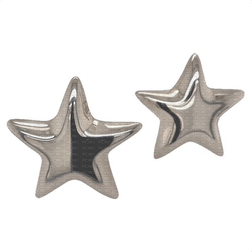

Prttyswiftie's Blog

About Me
Hiii! I’m Val, a data-driven professional by day and a lover of all things creative by heart. With a degree in economics and two years of experience in the Office of the Chancellor at Lone Star College, I’m passionate about blending analytics with innovation. Currently, I’m diving into data analytics to take my expertise to the next level.
When I’m off the clock, you’ll find me curating dreamy Pinterest boards, flipping through the pages of a great book, or losing myself in the art of building intricate puzzles. My faith is my anchor, and I proudly serve as secretary for my church,
Pentecostales de Cypress Creek, where I’m inspired by community and purpose.
This space is where my world of ambition meets my love for the little joys in life. Stick around for stories of growth, inspiration, and finding balance in the beautiful chaos.
Weekly Report
Februrary 11, 2025
Reading:
Eating:
Playing:
Obsessing:
Recommending:
Treating:
Diary Entry
Until next time, xoxo.
-Val